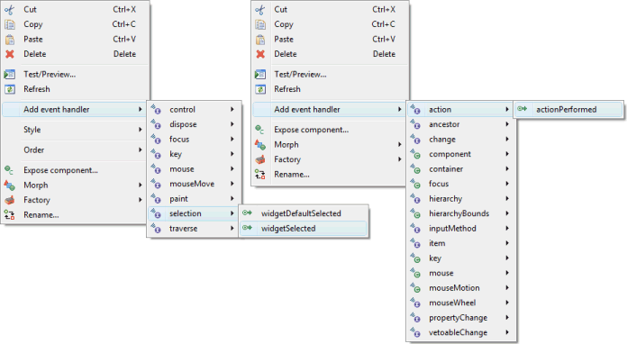
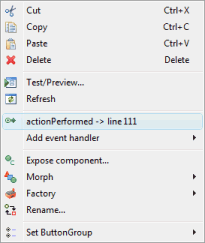

Events occur when the user interacts with the UI. The appropriate event-handling code is then executed. In order to know when events occur, event handlers must first be added to your components. The tool makes it very easy to add and remove event listeners to your components.

Adding an Event Handler
There
are two ways to add an event handler with the the editor. The first way is through the Property Pane. First select a component in either the Component Tree or the Design View.
Click the Show Events
 button to reveal the events list in the Property Pane.
Expand an event and double-click or press Enter on the event
handler you
wish to implement.
button to reveal the events list in the Property Pane.
Expand an event and double-click or press Enter on the event
handler you
wish to implement.
The second way to add an event handler is to simply right-click on a component (either in the Design View or in the Component Tree), select Add event handler > [name of the event] > [name of the event handler to implement].

A quick way to add event listeners to buttons (including check and radio buttons) and menu items is to simply double-click on the button or menu item. When double-clicked, a selection event listener will be created.
Any way you add an event, the tool will automatically create an event handler for the selected event method. The editor will then switch to the Source View and go directly to the new event handler method. The code generated looks like the following:
- public void widgetDefaultSelected(SelectionEvent arg0) {
- }
- public void widgetSelected(SelectionEvent arg0) {
- }
There
are two ways to quickly return to the event-handling code from the Design View. In the Property Pane,
click the Show Events
 button and expand the event. Then double-click
or press Enter on the event method to return to the code. The events' list in the Property Pane
is a list of all the events implemented, and each individual event's property
value is the list of methods implemented.
If a method has been implemented, its property value is the line number
in the source code where its event-handling code begins.
button and expand the event. Then double-click
or press Enter on the event method to return to the code. The events' list in the Property Pane
is a list of all the events implemented, and each individual event's property
value is the list of methods implemented.
If a method has been implemented, its property value is the line number
in the source code where its event-handling code begins.
The other way to quickly return to the event-handling code is to right-click on a component (either in the Design View or in the Component Tree), and then select the menu item for the correct method that was implemented. Shown to the right is "actionPerformed -> line 111" being selected. In this example, "actionPerformed" is the event method, and "111" is the line number in the source code on which the method begins.
Note: the tool is also able to generate an event handler stub method when a new event is created by setting the appropriate code generation preferences.
Deleting an Event Handler
There is only one way to delete an existing event handler in the editor. Select a component in either the Design View or in the Component Tree. In the Property Pane expand expand the event, click on the event method you wish to delete and then press Delete. If there are no other methods that have been implemented for that event, the tool will also delete the event listener for that event.